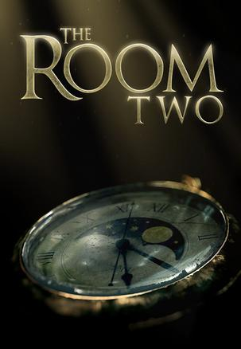
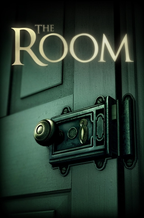

2016年6月
广播发布后不可编辑，所以每条都是那一刻的原话。
2016-06-29 22:27:38
读过 程序员面试攻略(原书第3版) ★★★★★
可以，这很干货！尤其是后面简历的一些指导，面试的一些tips，我觉得每次面试前都最好看一看~
2016-06-29 20:30:17
：
太帅了太帅了！！！我要看我要看！！！
2016-06-28 16:15:27
看过 可塑性记忆 / プラスティック･メモリーズ ★★★★☆
这动画分数曲线：5、4、3、……、3、5，取个均值4吧。第一集很是有趣，主体也很明确放在了人类的情感上面，然后水了很多集，然后回到主题，除了最后一集，后面几集略显仓促，最后一集节奏相当好！～愿你有一天能和重要之人重逢～（话说人造人和人造人，这个梗太有才了！！！）
2016-06-15 13:00:38
读过 解忧杂货店 ★★★★☆
这部作品还是有点推理的感觉，根据来信做出推理，看到来信我也会想解决办法，也有的困恼会产生共鸣。然而还是有些超现实了 _(:3」∠)_ （话说用手机读小说真心坚持不下来，这本书大概读了一年）
2016-06-14 21:55:06

这一部玩的好累啊 QAQ 还是第一部比较方便，这一部切来切去简直了，感觉差不多，但是就是好麻烦了，第一部不用看提示，这一部离不开提示
2016-06-14 17:15:44
 看过 惊天魔盗团 / Now You See Me ★★★★★
看过 惊天魔盗团 / Now You See Me ★★★★★
2分钟的成功！
2016-06-12 23:14:38

Heidi学姐推荐的，真是一款棒棒的游戏。实体店的密室逃脱经常觉得跟不上设计者的脑回路，不过这个有限的空间内真是爽翻啊！！！
2016-06-08 15:52:50
看过 魔兽 / Warcraft ★★★★☆
回请下咯，场面做的5别别棒，兽人PVP那两段真是特别棒，特效也不错，最后STAFF列表也都是特效；吴彦祖不是靠脸吃饭的 哈哈哈哈哈；
2016-06-07 21:40:12
看过 愤怒的小鸟 / The Angry Birds Movie ★★★★☆
剧情一般般，但是小鸟太萌了！！！！最后那几十只大眼睛，简直萌翻！！！！
2016-06-04 01:07:32
看过 X战警：天启 / X-Men: Apocalypse ★★★★☆
闯哥请客，不错不错，颇有《妇联3》的感觉，呼入一夜BOSS来，凭空多出来了个GOD，狼叔戏份有点少啊，明年2月见╮(￣▽￣)╭这一会历史故事（？逆转未来的未来故事？），一会未来故事，心好累 _(:3」∠)_
2016-06-01 17:01:12
说：
我的天哪！！！！！！瞧我发现了什么！！！！！！小学时候1块钱一本小漫画，总共有一百多册的口袋书，真是回忆啊[憨笑] 分享三重野瞳的单曲《ひとつのハートで》https://douc.cc/0AbVXs
{kind=link}